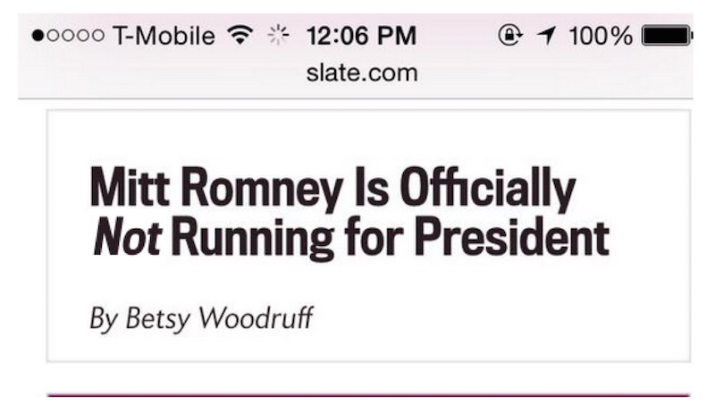

The following are the essays that I worked on during this semester.
The Mitt Romney Web Font Problem
The problem:
The problem discussed in this article is browser hiding text while the web font was still loading.
This specific problem occurs when you use multiple weights and styles of the same typeface together.

This is how the message looked without the fonts being loaded correctly.
This caused a major problem with readers who would just skim the content and thought that he was running foer the President.
But in reality, it was not the case.
The message was not loaded properly and due to this there were many misunderstanding regarding the news.
The problem was mainly caused because the web fonts were loading slower than the web page and hence there is some missing information if we use web fonts to
higlight anything.

This is how actually the news should look.
Each web font has its own separate FOIT. By combining two web fonts together in a single line,
the FOIT has created this problem.
The avoid problem the article states few ways:
The problem can be eliminated by using the font loading solution prescribed by the author in the Dev.Opera, which
is the easiest method to eliminate the FOIT by switching to Unstyled fallback text while the web page is still loading.
Also by using the approch documented in theFlash of Faux Text which uses font-synthesis to show browser generated bold and italic fallbacks while the real web fonts load.
Sources: https://www.zachleat.com/web/mitt-romney-webfont-problem/